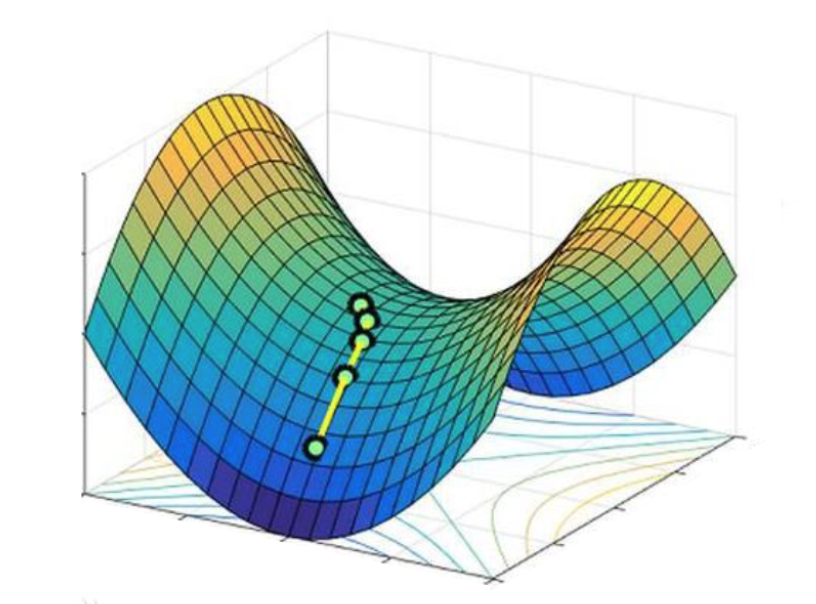
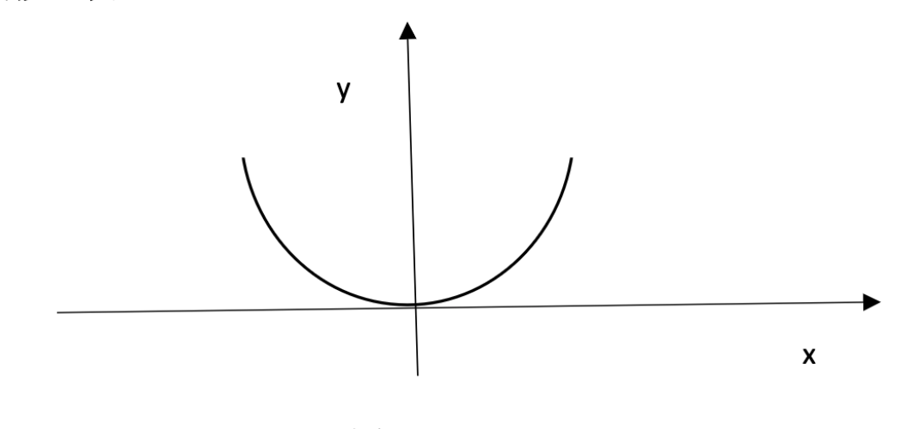
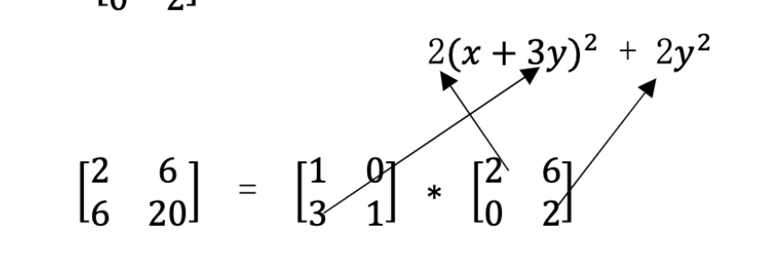
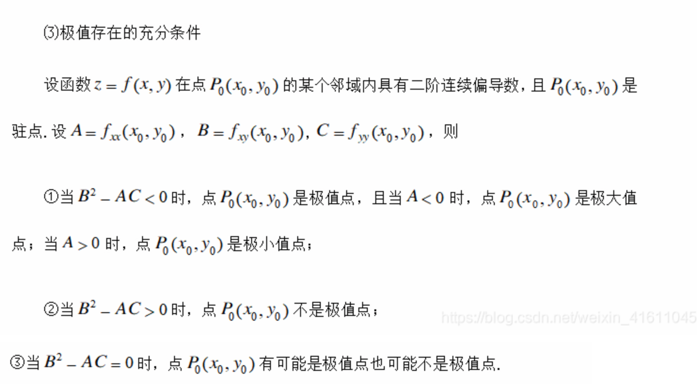

线性代数笔记(二十八)——正定矩阵和最小值
本节回归到实数域，重点讨论了正定矩阵这一主题，将之前所掌握的主元、行列式、特征值等知识联系起来，通过正定矩阵引出函数与矩阵之间的关系，介绍如何找到函数的最小值，并给出几何解释。
正定矩阵和最小值
何为正定矩阵，先从2阶方阵入手，下面给出正定矩阵的4种判定法：
- 特征值判定：两个特征值均为正数。即，\(\lambda_1 > 0, \lambda_2 > 0\)。
- 行列式判定：\(a>0,ac-b^2>0\)，即顺序主子式均为正值。
- 主元判定：主元皆为正数，即：\(a>0,\frac{ac-b^2}{a} > 0\)。
- 判别式：\(x^TAx > 0\)。
此外，正定矩阵都得是正定阵。
二阶正定矩阵的探讨
对于矩阵\(A=\begin{bmatrix}2&6 \\ 6&?\end{bmatrix}\)，根据上述判定法的行列式判定法，我们知道，这里的\(?\)处只要填上一个大于18的数，该矩阵就是正定的。
而如果正好填18进去，此时矩阵会变成一个奇异阵，它的行列式为0，只有一个主元2，特征值分别为0和20（由迹可以轻易算出）。对于这样的矩阵，我们可以成为半正定阵。
除了通过特征值、行列式和主元来判定，还可以用第四种判别式法来展开探讨：
\[ x^TAx=\begin{bmatrix}x_1&x_2\end{bmatrix}\begin{bmatrix} 2&6\\ 6&18 \end{bmatrix}\begin{bmatrix}x_1 \\x_2\end{bmatrix}=2x_1^2+12x_1x_2+18x_2^2 \]
实际上这里的2,12,18就分别代表了a,2b和c。这是一个标准的二次型，没有线性项，那么根据判别式法，对于\(2x_1^2+12x_1x_2+18x_2^2\)是否恒大于0呢？显然不是，因为在某种取值中，其结果可能恰好为0。
再来看看\(A\)不是正定的情况：
\[ x^TAx=\begin{bmatrix}x_1&x_2\end{bmatrix}\begin{bmatrix} 2&6\\ 6&7 \end{bmatrix}\begin{bmatrix}x_1 \\x_2\end{bmatrix}=2x_1^2+12x_1x_2+7x_2^2 \]
这一二次型呈现在坐标轴上是一个马鞍面：

从不同方向观察，它有着不同的性质，鞍点是某些方向的极值，但显然它不可能恒大于0。
而对于正定矩阵来说：
\[ x^TAx=\begin{bmatrix}x_1&x_2\end{bmatrix}\begin{bmatrix} 2&6\\ 6&20 \end{bmatrix}\begin{bmatrix}x_1 \\x_2\end{bmatrix}=2x_1^2+12x_1x_2+20x_2^2 \]
它是一个开口始终朝上的二次型曲面，其最小值在原点取到，切面类似于二次函数曲线：

利用微积分的知识，我们可以知道对于\(f(x,y)=2x^2+12xy+20y^2\)，原点处一阶偏导数为0，二阶偏导数为正可以知道原点处是极小值（在这里也是最小值），这是微积分的求最值方法，而对于线性代数来说，我们可以通过判定矩阵是否是正定阵，来得出函数是否有最小值。
将\(f(x,y)\)配方：\(f(x,y)=2(x+3y)^2+2y^2\)，显然，如果\(A\)非正定，那么配方剩下的\(y^2\)前的系数一定为负，而如果我们用\(f=1\)这个平面来截取这个曲线，则得到的一定是个椭圆。
实际上配方法反映到线性代数里就是消元： 
到n阶的推广
微积分中我们求二阶偏导数极值时的\(f_{xx},f_{yy}与f_{xy}^2\)之间的关系也可以反映到矩阵的正定判定上，即二阶导数矩阵：
\[ \begin{bmatrix} f_{xx} & f_{xy} \\ f_{yx} & f_{yy} \end{bmatrix} \]
这里主对角线的两个元素都是某一个方向上的n阶导数(上例n=2)，为了存在极小值，它们必须为正。而函数的求导顺序不会改变结果，所以沿着对角线的元素天然是对称的(如上例的\(f_{xy}=f_{yx}\))。此外，微积分中求极小值时还要求\(f_{xx}*f_{yy} > f_{xy}^2\)，而这一点正与判定该矩阵是否为正定阵的方法不谋而合。

这一判断也可以推广到n维方阵。